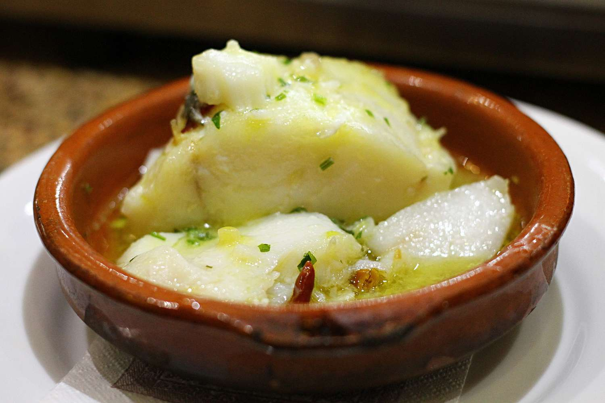

Bacalao Al Pil Pil Recipe

In Basque cooking, pil-pil means "simmered", and it is
common technique used in the region for centuries. In this recipe,
the bacalao, or cod, is cooked slowly in an earthenware pot.
Ingredients
- 1.5 lbs of bacalao
- 1/3 cup of olive oil
- 2 cloves of garlic, minced
- 1 tablespoon chopped parsley
Steps
- Place ccd in a pan with water to cover and simmer gently
for 20 minutes.
- Remove cod and break flesh into bite-sized pieces and
set aside.
- Heat oil in an earthenware casserole and cooke the garlic
until lightly golden.
- Add the parsley and fish, and cook for 3 to 4 minutes,
turning once.
- Serve in the casserole.